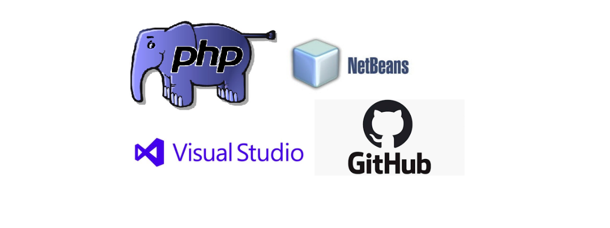
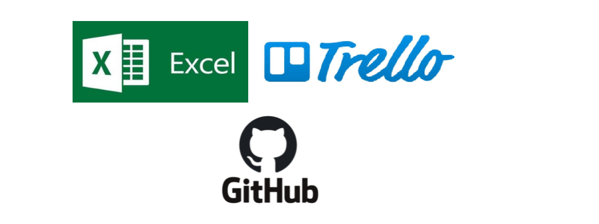

Para la realización del proyecto se ha usado diversos programas que nos facilitan el proceso de
creación de la plataforma virtual.
Herramientas virtuales de comunicación
Whatsapp
Mensajería y las llamadas son rápidas, simples y seguras. Herramienta muy utilizada por el equipo para comunicarnos en caso exista algunas emergencia como tambien trabajos pendientes.
Facebook
Especificamente facebook messenger, comunicación que se usa en caso un compañero tenga problemas con whatsapp o no cuente con un telefono movil.
Googgle Meet
Herramienta de videoconferencia, principalmente utilizada para la grabaciones de las reuniones diarias, reuniones de test o pruebas y retrospectiva.
Herramientas de programación y desarrollo del proyecto

PHP
Lenguaje de programación que se utilizará en todo el proyecto.
Netbeans y Visual studio COde
Entornos de trabajo utilizado por los desarrolladores del equipo, cada desarrollador es libre de trabajar con cualquier entorno con el que sienta cómodo.
Github
Herramienta muy importante para controlar las versiones del proyecto y tener un backup del
Herramientas de recopilación y destribución de datos

Excel
Acá se encuentra gran parte de nuestras tablas y principalmente el sprint burndown chart, ya que se nos hace más cómodos trabajar con esta herramienta.
Trello
Lo trabajamos como un Scrum Board, para ver las historias de usuarios con sus respectivas tareas pendientes y el avance de los desarrolladores.
Github
La herramienta fue utilizada con la finalidad de poder subir nuestro blog a internet con la información de nuestro avance, ya que github nos permite subir una pagina que consta de html, css y js sin ningún problema.